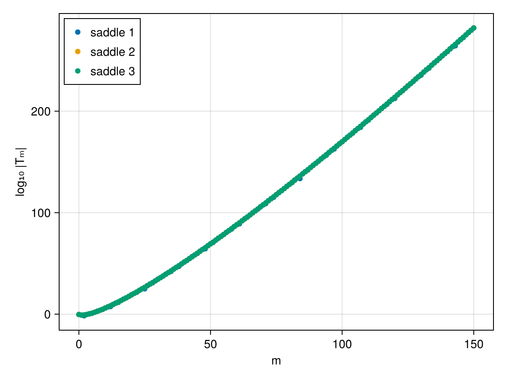
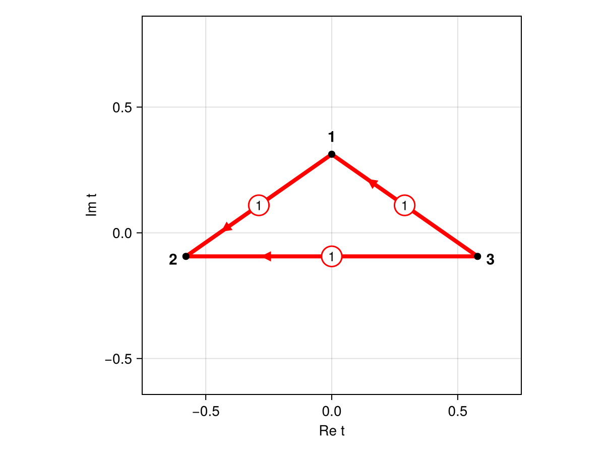
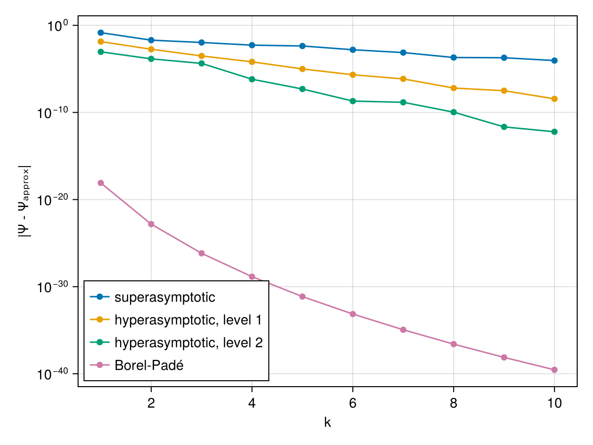
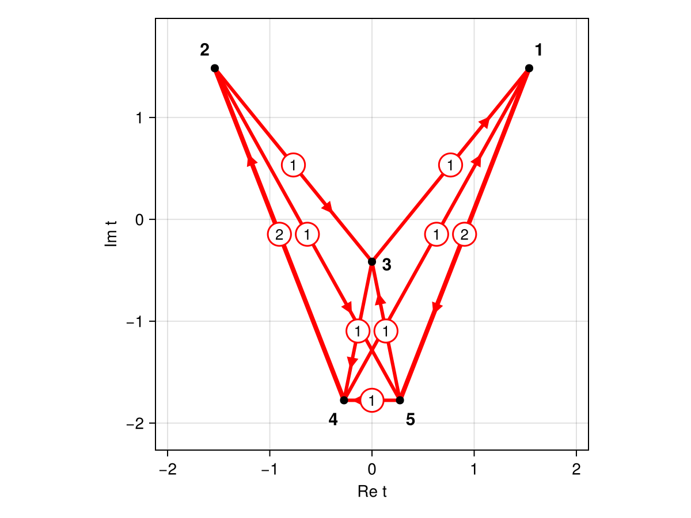
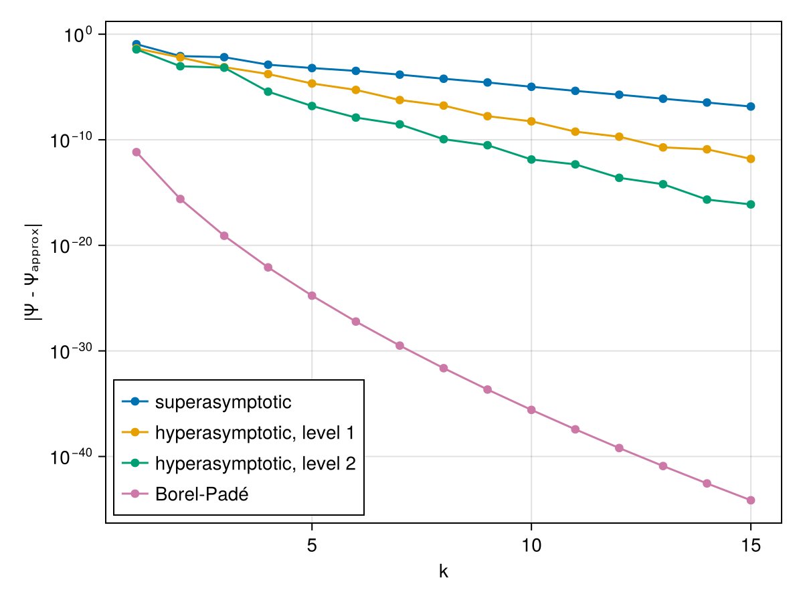

Tutorial
In this tutorial, we demonstrate the main features of Resurgence.jl with two examples: the Pearcey integral, a one-dimensional integral with three saddle points, and the Lorentzian lens of wave optics, a rational exponent that we treat through a polynomial lift (Sec. VII B of the paper).
All computations run in extended precision. The asymptotic series are computed in BigFloat, and the approximations of the integral, superasymptotic, hyperasymptotic and BorelPadeResum, run in the precision of the wavenumber $k$: passing k::BigFloat gives results far beyond double precision, which we compare with the exact integrals computed in BigFloat as well.
The Pearcey integral
We consider the Pearcey integral
\[\Psi(k) = \sqrt{\frac{k}{2\pi i}} \int_{\mathbb{R}} e^{i k f(q)}\, \mathrm{d}q, \qquad f(q) = q^4 + \frac{q^2}{2} + q.\]
Saddle points and the Gauss–Manin system
The exponent has three saddle points, the roots of $f'(q) = 4q^3 + q + 1$: one real saddle point at $q = -1/2$ and a complex conjugate pair. They can be found numerically with findAllSaddles and refined to high precision with refineSaddle; here, we supply them exactly.
using Resurgence, DynamicPolynomials, CairoMakie
setprecision(BigFloat, 256)
@polyvar q
f = q^4 + 1//2 * q^2 + q
s7 = sqrt(big(7))
saddles = [[complex(-big(1)/2)], [(1 - s7 * im)/4], [(1 + s7 * im)/4]]The Gauss–Manin system follows from Singular's gmspoly.lib. It consists of the good basis GM.ϕ and the matrices GM.M and GM.B:
GM = GaussManin(f)
GM.ϕ3-element Vector{DynamicPolynomials.Polynomial{DynamicPolynomials.Commutative{DynamicPolynomials.CreationOrder}, MultivariatePolynomials.Graded{MultivariatePolynomials.LexOrder}, Rational{BigInt}}}:
1//1
q
1//1 + 8//1q²GM.M3×3 Matrix{Rational{BigInt}}:
-1//32 3//4 1//32
-5//32 -1//16 3//32
-47//32 -5//4 -1//32GM.B3×3 Matrix{Rational{BigInt}}:
1//4 0 0
0 1//2 0
0 0 3//4The eigenvalues of $M$ are the critical values $\lambda_j = f(q_j)$:
ComplexF64.(GM.λs)3-element Vector{ComplexF64}:
-0.3125 - 9.429468950322541e-78im
0.09375 - 0.5787580992953792im
0.09375 + 0.5787580992953792imThe transseries
transseries computes the asymptotic series of all saddle points, ordered as GM.λs, as a vector of Expansions. Each expansion holds the saddle point x, the Borel singularity f₀ $= t_j = -i\lambda_j$, the exponent μ and the coefficients Ts, normalised such that Ts[1] $= 1/\sqrt{f''(q_j)}$. We compute the series to order 150, enough for the high-order Borel–Padé approximants and for the hyperasymptotic truncations below.
trans = transseries(f, GM, 150; saddles = saddles)
Σ = ComplexF64[s.f₀ for s in trans] # Borel singularities t = -iλ
T0 = ComplexF64[s.Ts[1] for s in trans] # normalisation of the series
Rs = [ComplexF64.(R) for R in GM.Rs] # residues of the Fuchsian system
Σ3-element Vector{ComplexF64}:
-9.429468950322541e-78 + 0.3125im
-0.5787580992953792 - 0.09375im
0.5787580992953792 - 0.09375imThe coefficients grow factorially. On a logarithmic scale:
fig = Figure()
ax = Axis(fig[1, 1], xlabel = "m", ylabel = "log₁₀ |Tₘ|")
for (j, s) in enumerate(trans)
scatter!(ax, 0:length(s.Ts) - 1, Float64.(log10.(abs.(s.Ts))), label = "saddle $j")
end
axislegend(ax, position = :lt)
fig
Adjacency: the Stokes constants
The Stokes constants follow from the monodromy of the Fuchsian system in the Borel plane. With method = :matrix, the solutions are transported numerically along keyhole contours.
K = stokes_constants(Σ, Rs, 0; T0 = T0, method = :matrix)
K = round.(Int, real.(K))3×3 Matrix{Int64}:
0 -1 1
1 0 1
-1 -1 0The entry K[l, j] is the Stokes constant of the transition in which saddle point $j$ picks up saddle point $l$. All three pairs are adjacent. The adjacency graph in the Borel plane:
fig, ax = plotStokesGraphGM(Σ, K)
fig
The adjacency controls the divergence of the series: the late terms grow as $\Gamma(m)/|F_j|^m$, with $F_j$ the distance to the nearest adjacent Borel singularity (singulants). divergence_rate estimates $|F_j|$ from the late terms:
[singulants(Σ, K) [divergence_rate(s.Ts) for s in trans]]3×2 Matrix{Float64}:
0.707107 0.72068
0.707107 0.719524
0.707107 0.719524Relevance: the South-East rule
The exponent is bounded from below, so at $\theta = \pi/2$ only the real saddle point is relevant. Rotating back to the oscillatory integral, the South-East rule tracks which complex saddle points are switched on along the way:
rel = relevance(f, Σ, K, T0; saddles = saddles)
rel.n03-element Vector{Int64}:
1
0
0n = southeast(Σ, K, rel.n0; verbose = true)3-element Vector{Int64}:
1
0
1The real saddle point switches on one of the two complex saddle points, the one whose contribution is exponentially suppressed. The other complex saddle point is irrelevant.
Approximations of the integral
The exact integral follows from a quadrature in BigFloat along the rotated line $q = e^{i\pi/8} u$, on which $e^{ikq^4}$ decays as $e^{-ku^4}$; the integrand has no singularities, so the rotation does not change the integral:
const QuadGK = Resurgence.QuadGK
fn(u) = u^4 + u^2 / 2 + u
function exact(k)
e = cis(BigFloat(π) / 8)
I = QuadGK.quadgk(u -> exp(im * k * fn(e * u)), BigFloat(-8), BigFloat(0), BigFloat(8); rtol = big"1e-60", order = 40)[1]
sqrt(k / (2 * BigFloat(π) * im)) * e * I
end
exact(big"6.0")-0.1148611265675526426664287580427179663784078672944254495464571323739728893941033 - 0.4893380385050137939422967776085721075324040391291380806839988032526932547887433imThe superasymptotic approximation truncates each relevant series near its smallest term; the hyperasymptotic approximation re-expands the remainder in the series of the adjacent saddle points. With k::BigFloat both are evaluated in BigFloat; rtol sets the accuracy of the quadratures of the hyperasymptotic levels:
k = big"6.0"
(superasymptotic = superasymptotic(trans, n, Σ, K, k).value,
hyperasymptotic = hyperasymptotic(trans, n, Σ, K, k; level = 1, rtol = big"1e-45").value)(superasymptotic = -0.1133054905857227990983355039425178287518767186131208008954822805658667902724367 - 0.4891343673685736056604091409312471824372961903828357552545398645496748829372384im, hyperasymptotic = -0.1148604672217493707597287338253812233871209297252279885693875755205272434755372 - 0.4893360280076098404001736705435814386731484882862181770090039165007539176966038im)The Borel–Padé sum of the relevant series provides an independent resummation, likewise in the precision of $k$:
borel_pade(k) = sum(n[j] * exp(im * k * im * trans[j].f₀) * BorelPadeResum(trans[j], k)[1]
for j in eachindex(trans) if n[j] != 0)
borel_pade(big"6.0")-0.1148611265675526426664287580427178969713668408033532512555329301994167967175401 - 0.489338038505013793942296777608571391119987276839752318384265943797019270331957imThe errors as a function of $k$:
ks = 1:10
errors = map(ks) do k
kb = BigFloat(k)
Ψ = exact(kb)
(SA = abs(Ψ - superasymptotic(trans, n, Σ, K, kb).value),
H1 = abs(Ψ - hyperasymptotic(trans, n, Σ, K, kb; level = 1, rtol = big"1e-45").value),
H2 = abs(Ψ - hyperasymptotic(trans, n, Σ, K, kb; level = 2, rtol = big"1e-45").value),
BP = abs(Ψ - borel_pade(kb)))
end
fig = Figure()
ax = Axis(fig[1, 1], xlabel = "k", ylabel = "|Ψ - Ψₐₚₚᵣₒₓ|", yscale = log10)
for (key, label) in ((:SA, "superasymptotic"), (:H1, "hyperasymptotic, level 1"),
(:H2, "hyperasymptotic, level 2"), (:BP, "Borel-Padé"))
scatterlines!(ax, collect(ks), [Float64(e[key]) for e in errors], label = label)
end
axislegend(ax, position = :lb)
fig
The exact integral is accurate to about $10^{-60}$, far below the errors shown. Every hyperasymptotic level improves the approximation, but here only slowly: the nearest adjacent Borel singularities lie at distance $0.707$, so that each level adds only $0.707$ to the exponential rate $e^{-\alpha^{(L)} k}$ of the error, $\alpha^{(L)} = 0.707,\ 1.414,\ 2.121$ for $L = 0, 1, 2$ (path_lengths). The Borel–Padé sum, which uses all 151 coefficients of the series, is far more accurate for this integral: at $k = 10$ the errors are $9.0\times10^{-5}$ (superasymptotic), $3.6\times10^{-9}$ (level 1), $6.0\times10^{-13}$ (level 2) and $2.9\times10^{-40}$ (Borel–Padé).
The Lorentzian lens
The one-dimensional Lorentzian lens (Sec. VII B of the paper),
\[\Psi(k) = \sqrt{\frac{k}{2\pi i}} \int_{\mathbb{R}} e^{i k f(x)}\, \mathrm{d}x, \qquad f(x) = \frac{(x - y)^2}{2} + \frac{\beta}{1 + x^2},\]
has a rational exponent. Writing $f = P/Q$ with $P(x) = 2\beta + (1 + x^2)(x - y)^2$ and $Q(x) = 2(1 + x^2)$, a delta function and its Fourier representation lift the integral to the polynomial exponent
\[f(x_1, x_2, x_3) = P(x_1)\, x_2 + x_3 \left(x_2\, Q(x_1) - 1\right).\]
Gauss–Manin system and Stokes constants
using Resurgence, DynamicPolynomials, MultivariatePolynomials, LinearAlgebra, CairoMakie
setprecision(BigFloat, 512) # for the saddle points and the Gauss-Manin system
y, β = 1, 1
@polyvar x1 x2 x3 monomial_order = Graded{MultivariatePolynomials.Reverse{InverseLexOrder}}
PP = 2β + (1 + x1^2) * (x1 - y)^2
QQ = 2 * (1 + x1^2)
f = PP * x2 + x3 * (x2 * QQ - 1)
saddles = [refineSaddle(f, s)[1] for s in findAllSaddles(f)]
GM = GaussManin(f)
GM.ϕ5-element Vector{DynamicPolynomials.Polynomial{DynamicPolynomials.Commutative{DynamicPolynomials.CreationOrder}, MultivariatePolynomials.Graded{MultivariatePolynomials.LexOrder}, Rational{BigInt}}}:
1//1
x1
-1//2 + 2//1x2
2//1x3 + 4//1x2 - 2//1x1
4//1x1x2The lifted integral has five saddle points. In the lifted representation, the fourth basis element $\phi_4 = 2x_3 + 4x_2 - 2x_1$ generates the asymptotic series of the one-dimensional lens. We normalise each series by its leading term $1/\sqrt{f''(x_j)}$ of the one-dimensional exponent and scale the leading vectors of the saddle solutions accordingly:
d2f(x) = 1 - 2β * (1 - 3x^2) / (1 + x^2)^3
u = [f(p) for p in saddles]
lens = map(1:GM.n) do j
λ, μ, Ts = asymptotic(j, GM, 160)
x = saddles[argmin(abs.(u .- λ))][1] # x₁ coordinate of the saddle point
T0 = 1 / sqrt(d2f(Complex{BigFloat}(x)))
(expansion = Expansion(x, -im * λ, μ, T0 .* Ts[4, :] ./ Ts[4, 1]),
v = ComplexF64.(T0 .* Ts[:, 1] ./ Ts[4, 1]))
end
trans = [l.expansion for l in lens]
vs = [l.v for l in lens]
Σ = ComplexF64[s.f₀ for s in trans]
Rs = [ComplexF64.(R) for R in GM.Rs]
K = round.(Int, real.(stokes_constants(Σ, Rs, 6; vs = vs, method = :matrix)))5×5 Matrix{Int64}:
0 0 1 1 -2
0 0 -1 2 -1
-1 1 0 -1 1
-1 -2 1 0 1
2 1 -1 -1 0All pairs of saddle points are adjacent, except for one pair:
fig, ax = plotStokesGraphGM(Σ, K)
fig
Relevance and approximations
The lifted exponent is unbounded from below, so we start the South-East rule from the one-dimensional integral, in which only the real minimum of $f$ is relevant:
n0 = [abs(imag(ComplexF64(s.x))) < 1e-10 ? 1 : 0 for s in trans]
n = southeast(Σ, K, n0; verbose = true)5-element Vector{Int64}:
0
0
1
0
1Besides the real saddle point (the real image of the lens), a complex saddle point contributes: an evanescent complex image.
The exact integral follows from a quadrature in BigFloat along the rotated line $x = y + e^{i\pi/8} u$, on which the Gaussian factor decays as $e^{-k u^2 \sin(\pi/4)/2}$; the rotation does not cross the poles $x = \pm i$ of $1/(1 + x^2)$. The approximations, in BigFloat at 256 bits, converge to it:
setprecision(BigFloat, 256) # for the approximations
const QuadGK = Resurgence.QuadGK
fd(x) = (x - y)^2 / 2 + β / (1 + x^2)
function exact(k)
e = cis(BigFloat(π) / 8)
I = QuadGK.quadgk(u -> exp(im * k * fd(y + e * u)), BigFloat(-25), BigFloat(0), BigFloat(25); rtol = big"1e-60", order = 40)[1]
sqrt(k / (2 * BigFloat(π) * im)) * e * I
end
borel_pade(k) = sum(n[j] * exp(im * k * im * trans[j].f₀) * BorelPadeResum(trans[j], k; rtol = big"1e-60")[1]
for j in eachindex(trans) if n[j] != 0)
ks = 1:15
errors = map(ks) do k
kb = BigFloat(k)
Ψ = exact(kb)
(SA = abs(Ψ - superasymptotic(trans, n, Σ, K, kb).value),
H1 = abs(Ψ - hyperasymptotic(trans, n, Σ, K, kb; level = 1, rtol = big"1e-45").value),
H2 = abs(Ψ - hyperasymptotic(trans, n, Σ, K, kb; level = 2, rtol = big"1e-45").value),
BP = abs(Ψ - borel_pade(kb)))
end
fig = Figure()
ax = Axis(fig[1, 1], xlabel = "k", ylabel = "|Ψ - Ψₐₚₚᵣₒₓ|", yscale = log10)
for (key, label) in ((:SA, "superasymptotic"), (:H1, "hyperasymptotic, level 1"),
(:H2, "hyperasymptotic, level 2"), (:BP, "Borel-Padé"))
scatterlines!(ax, collect(ks), [Float64(e[key]) for e in errors], label = label)
end
axislegend(ax, position = :lb)
fig
From $k \approx 4$ on, each hyperasymptotic level gains three to four orders of magnitude: at $k = 10$ the errors are $1.0\times10^{-5}$ (superasymptotic), $5.6\times10^{-9}$ (level 1) and $1.4\times10^{-12}$ (level 2). The Borel–Padé sum, which uses all 161 coefficients, is again far more accurate, $2.6\times10^{-36}$ at $k = 10$.